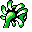

#228
Cradily
RockGrass
It sways its body like kelp as it holds prey fast Then it ends fights with strong acid
Base stats Total 440
HP96
Attack91
Defense107
Speed43
Special103
Evolution
Evolves from Lileep — Level 30
Pokédex data
- Species
- Barnacle Pokémon
- Height
- 4'11"
- Weight
- 133.8 lb
- Catch rate
- 45 / 255
- Base experience
- 201
- Growth rate
- Medium Fast
Level-up moves 12
LevelMoveTypePowerAcc.PP
TM / HM moves 21
TM / HMMoveTypePowerAcc.PP
Wild locations
Not found in the wild — evolve, trade or catch it elsewhere.